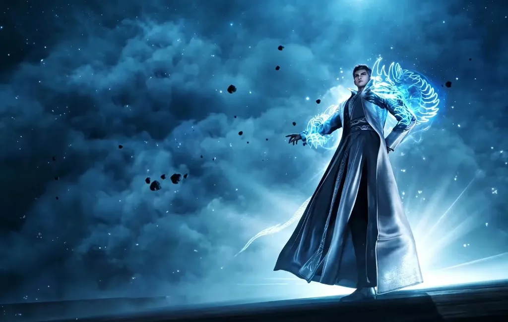

HR.ALLIANCE // DOJO-OF-LIMITS-SYS v7.4.2
--:--:-- // -- --- ----
WELCOME, KAVIN THORIQ
OPERATOR IDENTIFIED — ACCESS AUTHORIZED
⚡ CLASS: COSMIC GRADE
◈ TARGET: LUO FENG
● STATUS: AWAKENED
[ ENTER TERMINAL ]
PRESS ENTER • KLIK UNTUK MEMBUKA SISTEM UTAMA
◈
HR ALLIANCE NODE
— DOJO OF LIMITS ACCESS GRANTED ◈ /// OPERATOR:
KAVIN THORIQ
/// CLEARANCE LEVEL:
COSMIC CLASS
/// STATUS:
ALL SYSTEMS NOMINAL
/// SECURITY OVERRIDE:
OK
/// TARGET:
LUO FENG [AWAKENED]
/// SATELLITE UPLINK:
ACTIVE
/// SYSTEM LATENCY:
0ms
///
◈
HR ALLIANCE NODE
— DOJO OF LIMITS ACCESS GRANTED ◈ /// OPERATOR:
KAVIN THORIQ
/// CLEARANCE LEVEL:
COSMIC CLASS
/// STATUS:
ALL SYSTEMS NOMINAL
/// SECURITY OVERRIDE:
OK
/// TARGET:
LUO FENG [AWAKENED]
/// SATELLITE UPLINK:
ACTIVE
/// SYSTEM LATENCY:
0ms
///
🔊 SFX